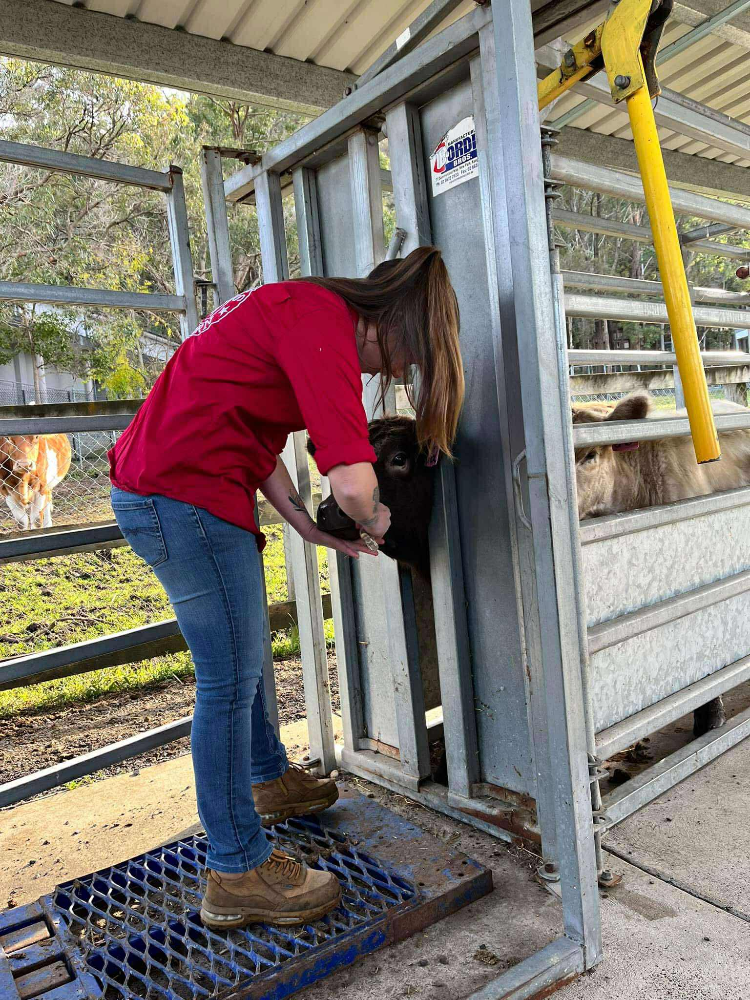
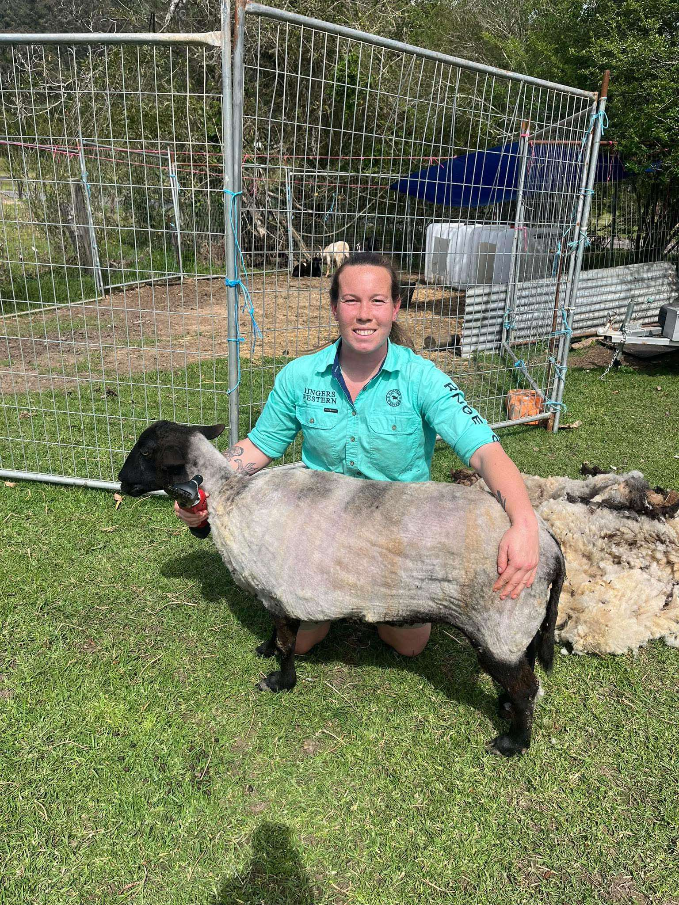

Complete Livestock Services

Shearing Services
- Portable shears and shearing set-up
- Full Shears
- Crutching & wigging
- Tidy up shears

Health & Care
- Hoof trimming (all livestock)
- Drenching (worming)
- Vaccination administration
- Tick management
- Scur (horn) removal
- Vitamin injections

Management Services
- Ear tagging
- Desexing & tail docking
- Nutritional advice
- Deceased livestock removal
Complete Record Keeping: All treatments logged with batch numbers, expiry dates, and withholding periods. Fully itemized invoices for tax and farm records.